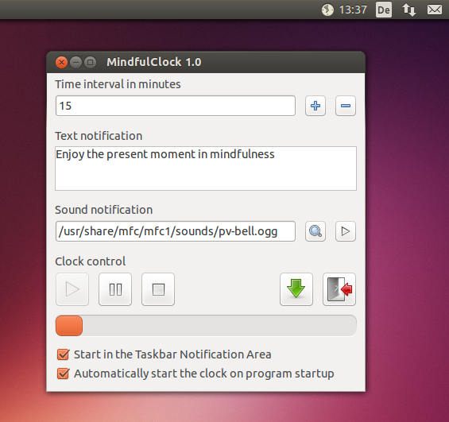

MindfulClock 1.0
With the MindfulClock you turn your device into a Bell of Mindfulness. During the day, it will periodically invite the bell and gives you the opportunity to pause, and enjoy the present moment in mindfulness.
Operating System
The MindfulClock is programmed in Python with the GUI toolkit wxPython. It runs on all platforms which support Python and wxpython, but is especially designed for Ubuntu.Screenshot
Installation
MindfulClock can either be installed using a debian package, or using the python sourcecode distribution method. On a Debian or Ubuntu based system, we recommend to install the debian package.Package installation
Download and install the Debian package
- Click on the <deb> download link.
- Save the file on your local disk.
- Open your filemanager and change to your Download folder.
- Click on the .deb package. Your package manager should prompt you to install the package.
You can now start the clock from the menu entry, or with the command:
<mindfulclock1 [OPTIONS]>
--start-tna Start the clock minimized in
the Taskbar Notification Area.
--autostart-clock Start the clock automatically.
--taskbar Use the classic taskbar, instead
of the application indicator.
--menu-time Show the time within the menu instead
besides the taskbar indicator icon.
(With --taskbar, this option
will be ignored.)
--help Show a little help.
Sourcecode Installation
Download Sourcecode Distribution
- Click on the <src> download link.
- Save the file on your local disk.
- Open a terminal and change to your Download folder.
- Extract the archive using tar xvzf followed by the archive name.
- Change to the newly created directory.
Install the Sourcecode Distribution
- Make sure that Python 2.7, wxPython 2.8, PyGame 1.9 are installed.
The technical packages timidity & python-appindicator may help.
Command line to install:
<sudo apt-get install python python-wxgtk2.8 python-pygame> <sudo apt-get install timidity python-appindicator>
- Run the command: <sudo ./setup.py install>.
Python now installs the source distribution. You can now start the program with the command:
<mindfulclock1 [OPTIONS]>
--start-tna Start the clock minimized in
the Taskbar Notification Area.
--autostart-clock Start the clock automatically.
--taskbar Use the classic taskbar, instead
of the application indicator.
--menu-time Show the time within the menu instead
besides the taskbar indicator icon.
(With --taskbar, this option
will be ignored.)
--help Show a little help.
Usage
MindfulClock offers several options. You can define the time interval, a text message that supports your practise and a bell sound. You can also disable either the text or the sound notification by clearing the relevant input box. All changes will be applied on the next startup of the clock (or by pressing the stop button and the start button again).
The application brings an indicator applet which you will find in the upper right corner of your Ubuntu Unity desktop. If you are not using Unity, you can also start the application with the --start-tna parameter, which will make use of the traditional systray instead.
From the indicator icon, you can start, stop or pause the clock and open the main application window.
MindfulClock can by configured to automatically start the clock on application startup and to start directly to the indicator applet.
The main window can always be minimized to the applet by pressing the minimize button. Using the exit button will close the application.
Removal
Depending of the way you have installed MindfulClock, you either have to remove the Debian package or the Sourcecode distribution.Remove the Debian package
In order to remove the package from your system, please make use of the package manager. On a Ubuntu System this might be the Software Center or the Synaptics package manager.Remove the settings
If the settings are to be removed: Delete the hidden file <.mfc1> in the home directory.Remove the Sourcecode Distribution
On a Ubuntu system delete follow directory and files with adminstrator rights:
directory: </usr/local/lib/python2.7/dist-packages/mfc1> file: </usr/local/lib/python2.7/dist-packages/mfc1-1.0.egg-info> file: </usr/local/bin/mfc1dist>Troubleshooting
To reset all setting please delete the hidden configuration file <.mfc1> in the home directory.Credits
Concept and Design
Marcus Möller <marcus[DOT]moeller[AT]ubuntu[DOT]com>Program Code
Andreas Ulrich http://erasand.jimdo.com/kontakt/Web Design
Marcus Moeller <marcus.moeller@ubuntu.com>Artwork
Marcus Möller, Carlos Gonçalves and The Tango Project (button icons)Sound
The WakeUp community26.12.2013 / Andreas Ulrich, Marcus Möller